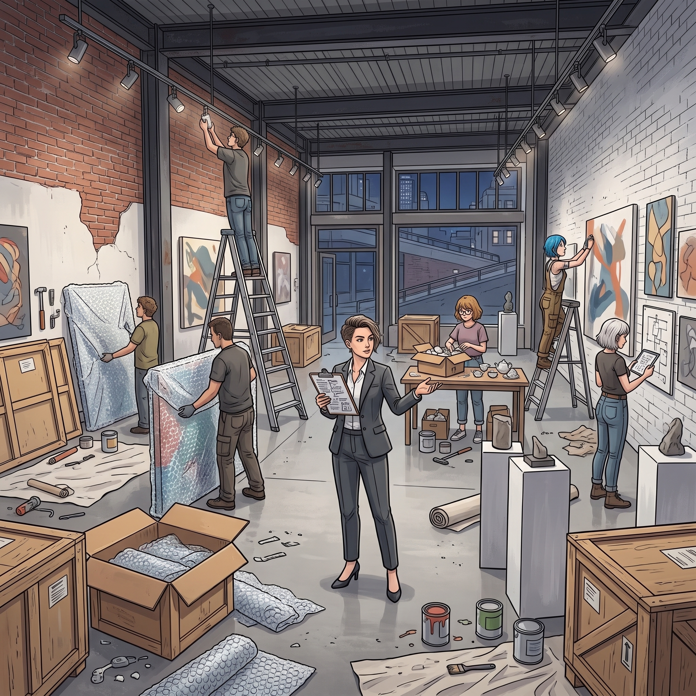

破壞性干預

西雅圖這間獨立當代畫廊藏在派克市場後面的坡道上，原本是印刷廠，現在裸磚牆刷成冷白色，天花板吊著一排排可調角度的軌道射燈。
Victoria 參與策劃的青年獨立藝術家聯展——就是那晚在天台上吃披薩時，她用策展人特權硬塞給 Max 的那個主展位——開幕前一晚，整個展廳像個施工現場。
Max 站在自己的展位前，白襯衫扣到最上面一顆，手心出汗。
牆上是她這次的主打：一張 16x20 英寸的黑白銀鹽照片，拍的是波特蘭威拉米特河上一座鏽跡斑斑的鋼鐵老橋。逆光，橋體大半沉在陰影裡，只有頂緣一道冷光。安靜、空曠、疏離。她在暗房泡了三個通宵，調了七次對比度才洗出這個版本。
Chloe 穿著工裝褲，抱著一箱展籤晃過來，往地上一墩，仰頭看那張橋。
「太乖了，Maxine。」
「什麼？」
「這張。拍得是好，但它像在圖書館裡不敢大聲說話。」
「它本來就該安靜。」
「行吧。」Chloe 聳肩走了。
晚上十一點，Victoria 把所有人趕回旅館：「明天九點半 VIP 進場，誰帶黑眼圈出現我扣誰車馬費。」
Max 走的時候回頭看了一眼那張橋。射燈關了，照片在安全燈下只是一塊深灰。Chloe 說工具落在後台，讓她先走。
十分鐘後，空展廳裡，Chloe 站在那張橋前面，從口袋摸出一張指甲蓋大的透明背膠貼紙——她用車庫噴漆模板印的那個螢光藍骷髏笑臉，皮卡後斗上貼過幾十次的那個。她把它按進橋體最深的那片陰影裡，又用定畫液掃了一點極細的黃銅打磨碎屑在邊緣。
正常光線下什麼都看不出來。但射燈要是斜切進暗部——
「工業跟街頭，撞一下靈魂。」她對自己說，很滿意，吹著口哨溜了出去。
一、 開幕
第二天上午，VIP 預展。
Victoria 一身黑色高定，端著香檳，領著兩位西雅圖藝評往 Max 的展位走。射燈正按她的要求斜切進那張橋的暗部。
兩位藝評在照片前停下。年長的那位慢條斯理：「有意思。她讓這張照片……拒絕了自己的莊重。你看陰影最深這裡——」他指著那點若有若無的冷藍微光，「有個東西。像一處瑕疵，可是它的行為方式像故意的。她把一個缺陷偷偷藏進銀鹽裡，然後看你敢不敢當著她的面叫它缺陷。」
年輕的那位推推眼鏡：「風景攝影不敢做的事。她做了。」
Max 站在旁邊，眼鏡差點從鼻樑上滑下去。
她一眼就認出那個東西是什麼。她這輩子見過那個骷髏不下一百次——貼在 Chloe 的皮卡後斗、安全帽、筆電上。
「Caulfield 一直很在意，」Victoria 忽然接話，語氣平穩得像在念展牆說明，「一張照片被允許裝下什麼。」
年長的藝評點點頭，在小本子上記了一筆，兩人心滿意足地被引去下一站。
等他們走遠，Victoria 臉上的職業笑容當場垮掉。她不用回頭，也知道兇手在哪。
「Chloe。」她從牙縫裡擠出來，「Elizabeth。」一拍。「Price。」
二、 後台審判
展廳側面的休息室，門「砰」一聲被反鎖。
Chloe 翹著二郎腿坐在沙發上吃小點心，抬頭看見門口面色不善的 Max 和渾身冒著西伯利亞寒氣的 Victoria，咧嘴一笑：「嗨，兩位大藝術家，聽說反響很熱烈？」
「跪下，Price。」Victoria 把手套甩在桌上，抱著雙臂居高臨下，「妳知道毀損參展銀鹽原作，合約違約金要賠多少嗎？要不是那兩個評審剛好吃這一套，我現在已經叫保安把妳用氣泡膜打包扔進普吉特海灣餵魚了。」
「這叫藝術干預！那個老頭還誇它有張力！」
「他誇的是我的策展。」
這次連 Max 都沒站在她這邊。她面無表情地從包裡掏出相機。
「Chloe Price。那張照片我在暗房泡了三個通宵。」她把一頂不知哪來的、印著「我是展覽破壞分子」的紙帽子扣在 Chloe 頭上，「舉著它。就是妳加過料的那張。笑一個。」
接下來十分鐘，Chloe 被迫戴著紙帽子、雙手舉著那張照片，在後台被拍了三十張高清黑白特寫。
「這組我要當期末『肖像恥辱史』作業交上去。」Max 收起相機。
Victoria 這邊也沒閒著。她掏出平板電腦當場草擬了一份文件，念出來：「勞動抵債協議。接下來三天展期，Price 全程穿黑色西裝馬甲與白襯衫，擔任本展唯一的專職重型物資搬運工兼 VIP 展位安保。本週所有冰鎮黑櫻桃汽水配額——沒收。」
「穿正裝搬箱子三天？！這違反日內瓦公約！」
「日內瓦公約不保護藝術破壞分子。簽字。」
坐在一旁遞純淨水的 Kate 憋笑憋得肩膀直抖，伸手替 Chloe 把被紙帽子壓亂的藍髮理好：「其實那個小骷髏……真的挺可愛的，Chloe。」她想了想，又補了一句，「而且 Victoria 挑的那套馬甲剪裁很合身，妳穿起來一定很帥。」
「謝了 Kate，至少妳還有良心。」
「不客氣。」Kate 笑瞇瞇地把筆遞給她，「簽這裡。」
三、 閉幕
Chloe 的刑期和展期一起，在第三天結束。
閉幕那天，那張被她偷偷加了「螢光骷髏與黃銅碎屑」的黑白橋樑照片，被西雅圖當代機械藝術基金會買走，價格比 Victoria 事先估的高一截——那個藏在暗部的小東西，讓收藏方一口咬定這是件「工業性作品」。
撤展的時候，Max 蹲在展位前，拿著一支細鋼筆，在作品標籤上加東西。
Chloe 扛著箱子路過，探頭看了一眼。
「Photo by Max Caulfield」下面，多了一行小字：
Disruptive intervention: Chloe Price.
「……妳認真的？」
「基金會問我，陰影裡那個干預算不算作品的一部分，要不要一起編進收藏檔案。」Max 蓋上筆，「我想了想。它本來確實太安靜了。」她站起來拍拍手上的灰，「而且反正你也不會改。」
「那是。」Chloe 把箱子扛到肩上，咧嘴笑，「下次我給妳整個系列。」
「下次你先問我。」
「這個要求我可以考慮。」
慶功宴上，Victoria 翻著白眼，把香檳一飲而盡。
「這是我策劃過最失控的一個展，」她說，「但我不得不承認——野蠻人的破壞力，有時候也算藝術的一部分。」
她放下杯子。
「這句話今晚說完就作廢。誰再引用，車馬費扣一半。」